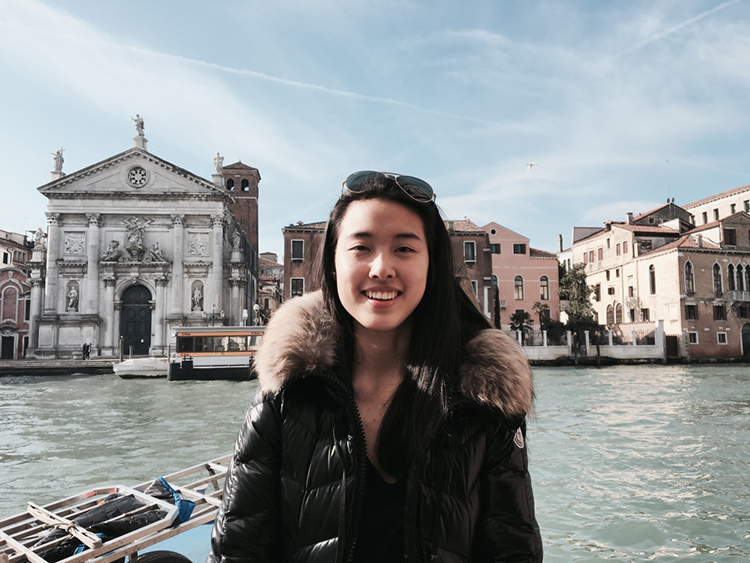

ABOUT

Hi,
I am Ivy, I grew up in Taiwan and am currently living in New York. I have no culinary background, but I can only say I love food and love to eat so I spend many time exploring how I can combine different ingredients. Over the summer I went to visit my sister in HK and she never understood why I would wake up an hour before work to make breakfast, she said I am crazy but that's just how important it is to me and how much I love it. I'm sure you all understand ;)